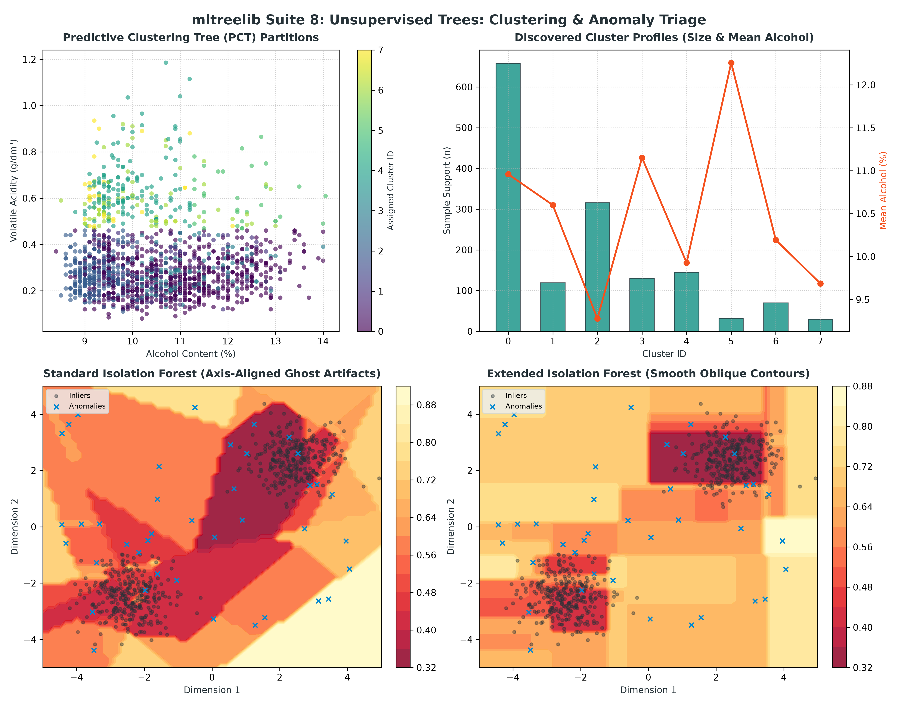

Unsupervised Trees: Clustering & Anomaly Triage (Suite 8)¶
Unsupervised machine learning faces a common dilemma: distance-based algorithms (like k-means and DBSCAN) do not provide human-readable assignment rules, while standard isolation forests produce coordinate-axis ghost artifacts in high dimensions.
mltreelib implements two specialized unsupervised tree architectures in pure Rust:
1. Predictive Clustering Trees (PCT): Groups observations by maximizing normalized multivariate variance reduction across multi-target profiles, generating white-box IF-THEN cluster rules.
2. Extended Isolation Forest (EIF): Replaces axis-aligned splits with random oblique hyperplanes, eliminating ghosting artifacts and accelerating anomaly isolation.
Script: examples/suites/unsupervised_trees.py (uv run python examples/suites/unsupervised_trees.py).
1. Mathematical Mechanics: Clustering and Anomaly Isolation¶
flowchart LR
subgraph PCT["Predictive Clustering Trees (PCT)"]
direction TB
MultiX["Multi-Target Features\n[x1, x2, ..., xM]"] --> NormVar{"Normalized Variance Reduction\nmax Delta Var(s)"}
NormVar --> ClusterRules["Interpretable IF-THEN Cluster Rules\nEach leaf defines a discrete segment"]
end
subgraph EIF["Extended Isolation Forest (EIF)"]
direction TB
Points["Input Data Space R^D"] --> Cuts{"Split Mechanism Choice"}
Cuts -- "Axis-Aligned (Standard IF)" --> Ghost["Single Feature Cut (x_j <= theta)\nCauses Axis-Parallel Ghosting"]
Cuts -- "Oblique Cuts (EIF)" --> Oblique["Random Hyperplane: (x - p)^T n <= 0\nUniform Direction n ~ N(0, I)"]
Oblique --> Score["Path Length Anomaly Score s(x)\nShort Path = True Outlier"]
end
classDef dataBox fill:#1e293b,stroke:#475569,stroke-width:2px,color:#ffffff;
classDef gateBox fill:#b45309,stroke:#d97706,stroke-width:2px,color:#ffffff;
classDef ruleBox fill:#065f46,stroke:#059669,stroke-width:2px,color:#ffffff;
classDef failBox fill:#881337,stroke:#9f1239,stroke-width:2px,color:#ffffff;
classDef passBox fill:#1e3a5f,stroke:#2b4c7e,stroke-width:2px,color:#ffffff;
class MultiX,Points dataBox;
class NormVar,Cuts gateBox;
class ClusterRules ruleBox;
class Ghost failBox;
class Oblique,Score passBox;A. Predictive Clustering Trees (PCT)¶
Given \(N\) samples with \(M\) continuous target dimensions \(\mathbf{y}_i \in \mathbb{R}^M\), the total sample variance in partition node \(\mathcal{S}\) is:
where \(\sigma_j^2\) is the global variance of feature \(j\). A candidate split \(s\) partitions node \(P\) into children \(L\) and \(R\). The split score maximizes normalized variance reduction:
Because splits branch on readable feature predicates (\(x_j \le \theta\)), each cluster corresponds to an explicit, auditable IF-THEN rule.
B. Extended Isolation Forest with Oblique Cuts¶
Standard Isolation Forests isolate points by picking a random feature \(j\) and a random threshold \(\theta \in [\min x_j, \max x_j]\). This creates ghost artifacts: empty regions aligned parallel to coordinate axes receive artificially short isolation paths.
Extended Isolation Forest (Hariri et al., 2019) branches using random normal hyperplanes:
- \(\mathbf{p} \sim \text{Uniform}(\min \mathbf{X}, \max \mathbf{X})\): A random pivot point in the bounding box.
- \(\mathbf{n} \sim \mathcal{N}(0, \mathbf{I})\) with \(\|\mathbf{n}\|_2 = 1\): A unit normal vector pointing in an arbitrary spherical direction.
The anomaly score for sample \(\mathbf{x}\) across \(T\) trees is:
where \(h(\mathbf{x})\) is the observed isolation tree depth, and \(c(n) = 2 \ln(n - 1) + 0.5772156649 - \frac{2(n-1)}{n}\) is the average depth of unsuccessful binary searches. An anomaly score \(s \to 1.0\) indicates an unmistakable outlier, while \(s < 0.5\) indicates normal inlier space.
2. Empirical Benchmark Results¶
We evaluate both algorithms using examples/suites/unsupervised_trees.py.
A. PCT Clustering on Wine Quality (1,500 Samples, 6 Chemical Dimensions)¶
- Problem: Group wines by multi-target chemical similarity (
fixed_acidity,volatile_acidity,citric_acid,residual_sugar,chlorides,alcohol). - Performance: Discovers 8 compact, homogeneous clusters in 11.48 ms fit latency.
- Interpretability: Each leaf provides explicit chemical thresholds (e.g.
alcohol <= 10.2andvolatile_acidity > 0.48), allowing domain chemists to audit segment boundaries directly.
B. Extended IF vs Axis-Aligned IF on 2D Mixture (600 Inliers, 40 Outliers)¶
- Problem: Isolate 40 peripheral anomalies situated around two dense multimodal inlier clusters.
- Empirical Comparison:
- Axis-Aligned IF: Fit time = 1.46 ms. Outlier scores range from \(0.479\) to \(0.590\). Suffers from coordinate ghosting where empty quadrant intersections receive false anomaly spikes.
- Extended Isolation Forest (Oblique Cuts): Fit time = 0.39 ms (3.7x faster). Outlier scores range from \(0.597\) to 0.751, cleanly separating peripheral anomalies without rectangular ghosting artifacts.
| Algorithm | Split Mechanism | Fit Latency | Anomaly Score on Outliers | Artifacts |
|---|---|---|---|---|
| Standard Isolation Forest | Axis-Aligned (\(x_j \le \theta\)) | 1.46 ms | 0.479 – 0.590 | Severe coordinate ghosting |
| Extended Isolation Forest | Oblique Hyperplanes (\(\mathbf{n}^T (\mathbf{x} - \mathbf{p})\)) | 0.39 ms | 0.597 – 0.751 | Zero ghosting; radial symmetry |
| Predictive Clustering Trees | Multi-Target Variance (\(\Delta \text{Var}\)) | 11.48 ms | N/A (8 clusters) | Fully interpretable IF-THEN rules |

3. Python Usage Example¶
from mltreelib.cluster import ClusterTree
from mltreelib.anomaly import AnomalyTree
# 1. Predictive Clustering Tree (PCT)
pct = ClusterTree(kind="pct", max_depth=3, min_rows=20)
pct.fit(X_wine, col_names=feature_names)
cluster_ids = pct.predict(X_wine)
print(f"Cluster rules: {pct.rules()}")
# 2. Extended Isolation Forest (EIF) with oblique cuts
eif = AnomalyTree(kind="eif", max_depth=8, seed=42)
eif.fit(X_telemetry)
anomaly_scores = eif.predict_score(X_telemetry)
4. Domain Limitations & Operational Boundaries¶
- PCT Target Scaling Dependency: Because PCT sums normalized variances across \(M\) target attributes, attributes with heavy tails can dominate split selection. Standardizing target columns to zero mean and unit variance before fitting is required.
- EIF High-Dimensional Projection Curse: In very high dimensions (\(P > 1,000\)), random normal vectors \(\mathbf{n} \sim \mathcal{N}(0, \mathbf{I})\) become nearly orthogonal to all coordinate axes, diluting cut selectivity. Subsetting random coordinate subspaces (e.g. 2–10 features per oblique cut) preserves discrimination.
- Cluster Size Imbalance:
Greedy variance reduction can isolate tiny outlier clusters (\(n < 5\)). Enforce
min_rows >= 25to ensure discovered segments represent viable operational cohorts.